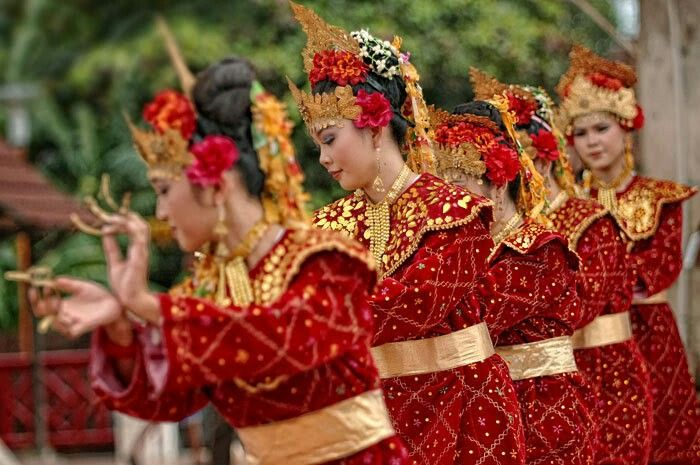

Budaya Kota Ternate

Kesultanan Ternate
Kesultanan Ternate merupakan salah satu kerajaan Islam tertua di Indonesia yang memiliki peran penting dalam sejarah penyebaran agama Islam dan perdagangan rempah. Hingga saat ini, tradisi dan adat istiadat kesultanan masih dijaga dan dilestarikan oleh masyarakat.

Tarian Tradisional
Ternate memiliki berbagai tarian tradisional yang mencerminkan kehidupan masyarakat dan nilai budaya lokal. Tarian ini biasanya ditampilkan dalam acara adat, penyambutan tamu, dan festival budaya sebagai bentuk pelestarian warisan leluhur.